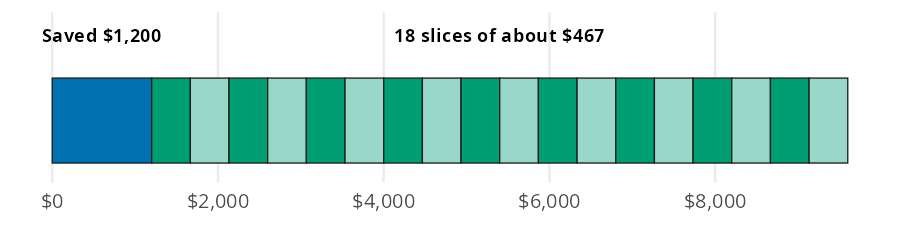
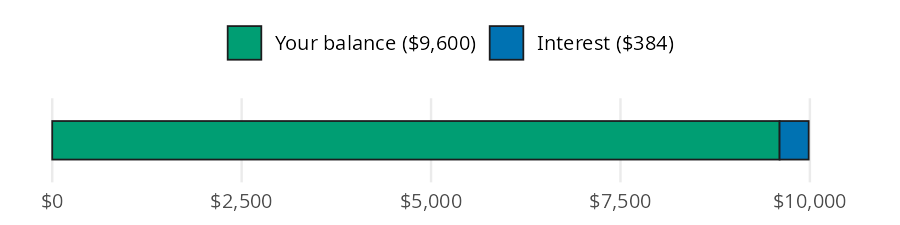
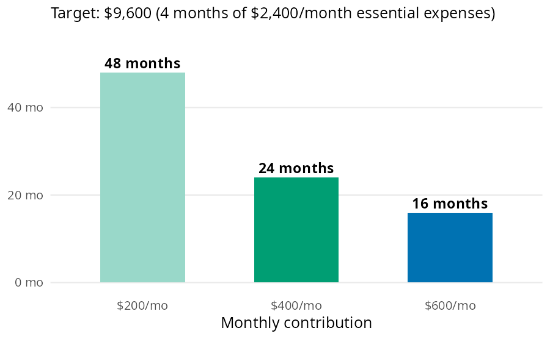

target_3 = emergency_fund_target(monthly_expenses=2400, months=3)
target_6 = emergency_fund_target(monthly_expenses=2400, months=6)
target_3, target_6(7200.0, 14400.0)An emergency fund is cash set aside so a car repair or a job loss doesn’t end up on a credit card. Building one comes down to four questions. How big should the fund be, and how long will it take to fill? How much should you save each month to finish by a deadline, and what does the fund earn in a savings account? In this page I’ll answer them with emergency_fund_target(), months_to_ef_goal(), monthly_contribution_needed(), and ef_growth(). The examples below use the numbers from the Emergency Fund chapter of the book, where each formula is built from scratch.
Each function answers one of the four questions:
| Function | Returns | Units |
|---|---|---|
| emergency_fund_target() | target balance | dollars |
| months_to_ef_goal() | months until the target is met, rounded up | whole months (int) |
| monthly_contribution_needed() | monthly savings needed to meet a deadline, rounded up | whole dollars (int) |
| ef_growth() | balance after interest | dollars |
All four accept arrays. The apy argument in ef_growth() follows the decimal convention from Get started, so 0.04 is 4%.
The standard target is 3 to 6 months of essential expenses: housing, groceries, utilities, transportation, health insurance, and minimum debt payments. Dining out and subscriptions don’t count, because those are the first things to go in a real emergency. The book’s example is a first job with $2,400 a month in essential expenses.
Each bar below is the one before it plus one more month of expenses.

emergency_fund_target() multiplies monthly expenses by months (3 by default). The code below computes both ends of the standard range:
target_3 = emergency_fund_target(monthly_expenses=2400, months=3)
target_6 = emergency_fund_target(monthly_expenses=2400, months=6)
target_3, target_6(7200.0, 14400.0)The range runs from $7,200 to $14,400. A stable salary with good insurance sits near the low end; variable income or dependents push toward the high end. The rest of the book’s examples split the difference at 4 months:
target = emergency_fund_target(monthly_expenses=2400, months=4)
target9600.0Most people don’t start from zero. Say $1,200 is already saved toward the 4 month target, and $400 goes into the fund each month.
Think of the target as one bar. The saved part is already filled in, and the gap is cut into $400 slices; counting the slices gives the number of months.

months_to_ef_goal() subtracts the current balance from the target and divides the gap by the monthly contribution:
saved = 1200
months_needed = months_to_ef_goal(
target=target,
current_balance=saved,
monthly_contribution=400,
)
months_needed21The $8,400 gap takes 21 months, or about 1.8 years. The result is rounded up to whole months, because a partial month still means one more transfer.
Now flip the question. The target is still $9,600 with $1,200 saved, but the goal is to finish in 18 months.
This time the number of slices is fixed at one per month. The question is how wide each slice has to be.

monthly_contribution_needed() divides the same gap by the number of months instead:
deadline = 18
contribution = monthly_contribution_needed(
target=target,
current_balance=saved,
months=deadline,
)
contribution467Saving $467 a month closes the gap in 18 months. The function rounds up to the next whole dollar, so the payments add up to $8,406: enough to cover the gap with $6 to spare.
A high yield savings account (HYSA) pays interest on the fund. Savings accounts advertise an APY (annual percentage yield), which is what the money earns in a year with monthly compounding already included. A higher APY means the fund grows faster. The book’s example leaves a full $9,600 fund untouched for 12 months at 4% APY, close to what top HYSAs paid in late 2026.
The bar below shows the balance after a year: the original deposit, plus a thin slice of interest on the end.

ef_growth() multiplies the balance by (1 + apy) once per year, using a fraction of a year for partial periods:
grown = ef_growth(balance=target, apy=0.04, months=12)
grown9984.0The fund grows to $9,984, which is $384 of interest. That won’t change the timeline much, but it can cover a small car repair without touching the fund itself.
The book’s build chart compares three monthly contributions toward the same $9,600 target, starting from an empty account.

Because months_to_ef_goal() accepts arrays, the whole chart is one call:
contributions = [200, 400, 600]
build = pl.DataFrame({
"monthly": contributions,
"months": months_to_ef_goal(
target=target,
current_balance=0,
monthly_contribution=contributions,
),
})
build| monthly | months |
|---|---|
| i64 | i64 |
| 200 | 48 |
| 400 | 24 |
| 600 | 16 |
Doubling the contribution from $200 to $400 cuts the timeline from 48 months to 24, and $600 gets there in 16.
The same comparison works in reverse. The code below finds the monthly amount needed to close the $8,400 gap in one, one and a half, or two years:
deadline_months = [12, 18, 24]
deadlines = pl.DataFrame({
"months": deadline_months,
"monthly": monthly_contribution_needed(
target=target,
current_balance=saved,
months=deadline_months,
),
})
deadlines| months | monthly |
|---|---|
| i64 | i64 |
| 12 | 700 |
| 18 | 467 |
| 24 | 350 |
Stretching the deadline from one year to two drops the monthly amount from $700 to $350.
months for variable income or dependents.monthly_contribution and months must be greater than 0. A zero raises a ValueError instead of returning inf.0.04), not a percent (4).The book’s order matters here. A $1,000 starter fund comes first, then high interest debt (see Managing Debt), and then the full fund. The scenario below picks up at the last step: $2,400 a month in essential expenses, a 4 month target, $1,200 already saved, and an 18 month deadline. percent_of_income() from Budgeting shows how much of a $3,200 take home paycheck the plan uses.
plan_target = emergency_fund_target(monthly_expenses=2400, months=4)
plan_monthly = monthly_contribution_needed(
target=plan_target,
current_balance=1200,
months=18,
)
plan_months = months_to_ef_goal(
target=plan_target,
current_balance=1200,
monthly_contribution=plan_monthly,
)
plan_share = percent_of_income(expense=plan_monthly, income=3200)
plan_interest = ef_growth(balance=plan_target, apy=0.04, months=12) - plan_target
pl.DataFrame({
"step": [
"target",
"monthly contribution",
"months to goal",
"percent of take home pay",
"first year of interest",
],
"value": [
round(float(v), 1)
for v in [plan_target, plan_monthly, plan_months, plan_share, plan_interest]
],
})| step | value |
|---|---|
| str | f64 |
| "target" | 9600.0 |
| "monthly contribution" | 467.0 |
| "months to goal" | 18.0 |
| "percent of take home pay" | 14.6 |
| "first year of interest" | 384.0 |
Saving $467 a month takes 14.6% of the paycheck. Feeding that contribution back into months_to_ef_goal() returns 18 months, which confirms the plan meets the deadline. Once the fund is full, a year in a HYSA adds $384 without any new deposits. Automating Savings covers setting up the monthly transfer, and High-Yield Savings Accounts covers choosing the account.
An emergency fund comes down to four numbers. They are the target, the months to reach it, the monthly amount a deadline requires, and the interest earned along the way. emergency_fund_target(), months_to_ef_goal(), monthly_contribution_needed(), and ef_growth() compute each one. All four accept arrays, so comparing contributions or deadlines takes a single call.